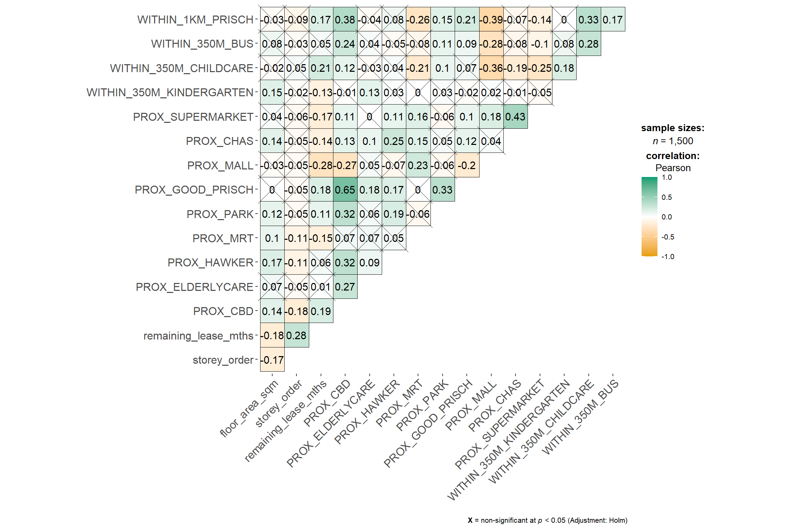
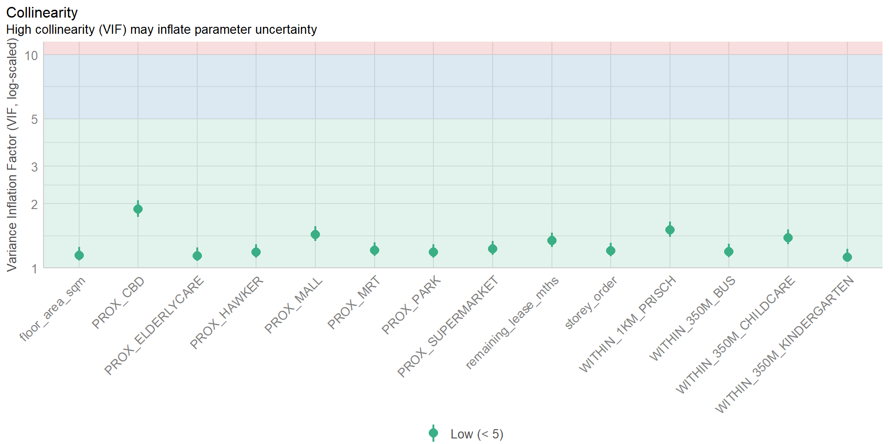
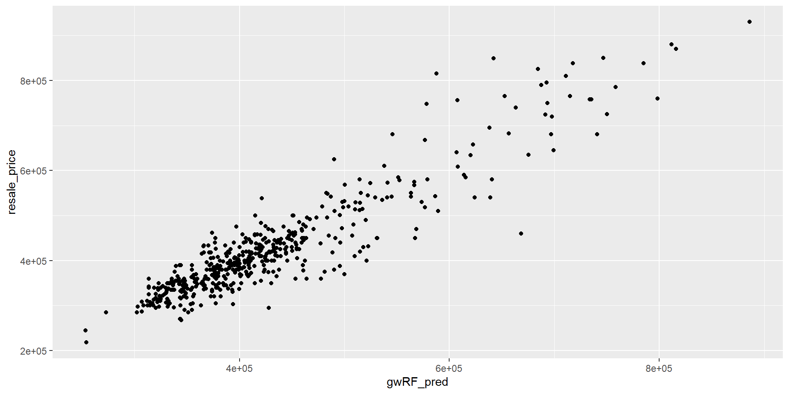

pacman::p_load(sf, spdep, GWmodel, SpatialML,
tmap, rsample, Metrics, tidyverse,
knitr, kableExtra)In-Class Exercise 08
In-class Exercise 8: Supplement to Hands-on Exercise 8
Getting Started
Installing and Loading R packages
Preparing Data
mdata <- read_rds("data/rds/mdata.rds")set.seed(1234)
HDB_sample <- mdata %>%
sample_n(1500)The code chunk below is used to check if there are overlapping point features.
overlapping_points <- HDB_sample %>%
mutate(overlap = lengths(st_equals(., .)) > 1)In the code code chunk below, st_jitter() of sf package is used to move the point features by 5m to avoid overlapping point features.
HDB_sample <- HDB_sample %>%
st_jitter(amount = 5)Data Sampling
The entire data are split into training and test data sets with 65% and 35% respectively by using initial_split() of rsample package. rsample is one of the package of tigymodels.
set.seed(1234)
resale_split <- initial_split(HDB_sample,
prop = 6.67/10,)
train_data <- training(resale_split)
test_data <- testing(resale_split)Multicollinearity check
In order to avoid multicollineariy. In the code chunk below, ggcorrmat() of ggstatsplot is used to plot a correlation matrix to check if there are pairs of highly correlated independent variables.
mdata_nogeo <- mdata %>%
st_drop_geometry()
# ggstatsplot::ggcorrmat(mdata_nogeo[, 2:17])
Building a non-spatial multiple linear regression
price_mlr <- lm(resale_price ~ floor_area_sqm +
storey_order + remaining_lease_mths +
PROX_CBD + PROX_ELDERLYCARE + PROX_HAWKER +
PROX_MRT + PROX_PARK + PROX_MALL +
PROX_SUPERMARKET + WITHIN_350M_KINDERGARTEN +
WITHIN_350M_CHILDCARE + WITHIN_350M_BUS +
WITHIN_1KM_PRISCH,
data=train_data)
olsrr::ols_regress(price_mlr) Model Summary
--------------------------------------------------------------------------
R 0.862 RMSE 60813.316
R-Squared 0.742 MSE 3754578098.252
Adj. R-Squared 0.739 Coef. Var 14.255
Pred R-Squared 0.734 AIC 24901.005
MAE 45987.256 SBC 24979.529
--------------------------------------------------------------------------
RMSE: Root Mean Square Error
MSE: Mean Square Error
MAE: Mean Absolute Error
AIC: Akaike Information Criteria
SBC: Schwarz Bayesian Criteria
ANOVA
-------------------------------------------------------------------------------
Sum of
Squares DF Mean Square F Sig.
-------------------------------------------------------------------------------
Regression 1.065708e+13 14 761220078101.236 202.745 0.0000
Residual 3.698259e+12 985 3754578098.252
Total 1.435534e+13 999
-------------------------------------------------------------------------------
Parameter Estimates
------------------------------------------------------------------------------------------------------------------
model Beta Std. Error Std. Beta t Sig lower upper
------------------------------------------------------------------------------------------------------------------
(Intercept) 115703.696 34303.409 3.373 0.001 48387.533 183019.860
floor_area_sqm 2778.618 292.262 0.165 9.507 0.000 2205.089 3352.146
storey_order 12698.165 1070.950 0.211 11.857 0.000 10596.559 14799.771
remaining_lease_mths 350.252 14.596 0.450 23.997 0.000 321.610 378.894
PROX_CBD -16225.588 630.092 -0.572 -25.751 0.000 -17462.065 -14989.110
PROX_ELDERLYCARE -11330.930 3220.845 -0.061 -3.518 0.000 -17651.436 -5010.423
PROX_HAWKER -19964.070 4021.046 -0.087 -4.965 0.000 -27854.872 -12073.268
PROX_MRT -39652.516 5412.288 -0.130 -7.326 0.000 -50273.456 -29031.577
PROX_PARK -15878.322 4609.199 -0.061 -3.445 0.001 -24923.300 -6833.344
PROX_MALL -15910.922 6438.111 -0.048 -2.471 0.014 -28544.911 -3276.933
PROX_SUPERMARKET -18928.514 13304.965 -0.025 -1.423 0.155 -45037.848 7180.821
WITHIN_350M_KINDERGARTEN 9309.735 2024.293 0.079 4.599 0.000 5337.313 13282.157
WITHIN_350M_CHILDCARE -1619.514 1180.948 -0.026 -1.371 0.171 -3936.977 697.948
WITHIN_350M_BUS -447.695 738.715 -0.011 -0.606 0.545 -1897.331 1001.940
WITHIN_1KM_PRISCH -10698.012 1543.511 -0.138 -6.931 0.000 -13726.960 -7669.065
------------------------------------------------------------------------------------------------------------------# Model Summary
# --------------------------------------------------------------------------
# R 0.862 RMSE 60813.316
# R-Squared 0.742 MSE 3754578098.252
# Adj. R-Squared 0.739 Coef. Var 14.255
# Pred R-Squared 0.734 AIC 24901.005
# MAE 45987.256 SBC 24979.529
# --------------------------------------------------------------------------
# RMSE: Root Mean Square Error
# MSE: Mean Square Error
# MAE: Mean Absolute Error
# AIC: Akaike Information Criteria
# SBC: Schwarz Bayesian Criteria
#
# ANOVA
# -------------------------------------------------------------------------------
# Sum of
# Squares DF Mean Square F Sig.
# -------------------------------------------------------------------------------
# Regression 1.065708e+13 14 761220078101.236 202.745 0.0000
# Residual 3.698259e+12 985 3754578098.252
# Total 1.435534e+13 999
# -------------------------------------------------------------------------------
#
# Parameter Estimates
# ------------------------------------------------------------------------------------------------------------------
# model Beta Std. Error Std. Beta t Sig lower upper
# ------------------------------------------------------------------------------------------------------------------
# (Intercept) 115703.696 34303.409 3.373 0.001 48387.533 183019.860
# floor_area_sqm 2778.618 292.262 0.165 9.507 0.000 2205.089 3352.146
# storey_order 12698.165 1070.950 0.211 11.857 0.000 10596.559 14799.771
# remaining_lease_mths 350.252 14.596 0.450 23.997 0.000 321.610 378.894
# PROX_CBD -16225.588 630.092 -0.572 -25.751 0.000 -17462.065 -14989.110
# PROX_ELDERLYCARE -11330.930 3220.845 -0.061 -3.518 0.000 -17651.436 -5010.423
# PROX_HAWKER -19964.070 4021.046 -0.087 -4.965 0.000 -27854.872 -12073.268
# PROX_MRT -39652.516 5412.288 -0.130 -7.326 0.000 -50273.456 -29031.577
# PROX_PARK -15878.322 4609.199 -0.061 -3.445 0.001 -24923.300 -6833.344
# PROX_MALL -15910.922 6438.111 -0.048 -2.471 0.014 -28544.911 -3276.933
# PROX_SUPERMARKET -18928.514 13304.965 -0.025 -1.423 0.155 -45037.848 7180.821
# WITHIN_350M_KINDERGARTEN 9309.735 2024.293 0.079 4.599 0.000 5337.313 13282.157
# WITHIN_350M_CHILDCARE -1619.514 1180.948 -0.026 -1.371 0.171 -3936.977 697.948
# WITHIN_350M_BUS -447.695 738.715 -0.011 -0.606 0.545 -1897.331 1001.940
# WITHIN_1KM_PRISCH -10698.012 1543.511 -0.138 -6.931 0.000 -13726.960 -7669.065 Multicollinearity check with VIF
# vif <- performance::check_collinearity(price_mlr)
# kable(vif,
# caption = "Variance Inflation Factor (VIF) Results") %>%
# kable_styling(font_size = 18) # Variance Inflation Factor (VIF) Results
# Term VIF VIF_CI_low VIF_CI_high SE_factor Tolerance Tolerance_CI_low Tolerance_CI_high
# floor_area_sqm 1.146686 1.085743 1.250945 1.070834 0.8720785 0.7993954 0.9210287
# storey_order 1.206020 1.135720 1.312734 1.098189 0.8291736 0.7617690 0.8804986
# remaining_lease_mths 1.343645 1.254833 1.463410 1.159157 0.7442440 0.6833358 0.7969186
# PROX_CBD 1.887898 1.733977 2.074096 1.374008 0.5296898 0.4821378 0.5767088
# PROX_ELDERLYCARE 1.140418 1.080572 1.244716 1.067904 0.8768712 0.8033960 0.9254357
# PROX_HAWKER 1.183865 1.116887 1.289223 1.088056 0.8446907 0.7756609 0.8953457
# PROX_MRT 1.211390 1.140307 1.318485 1.100632 0.8254980 0.7584464 0.8769566
# PROX_PARK 1.186122 1.118797 1.291599 1.089092 0.8430839 0.7742340 0.8938169
# PROX_MALL 1.435504 1.335252 1.565736 1.198125 0.6966193 0.6386771 0.7489224
# PROX_SUPERMARKET 1.226727 1.153448 1.335000 1.107577 0.8151773 0.7490638 0.8669656
# WITHIN_350M_KINDERGARTEN 1.123989 1.067172 1.228865 1.060183 0.8896886 0.8137594 0.9370564
# WITHIN_350M_CHILDCARE 1.387119 1.292841 1.511748 1.177760 0.7209189 0.6614860 0.7734902
# WITHIN_350M_BUS 1.193498 1.125056 1.299398 1.092473 0.8378731 0.7695869 0.8888447
# WITHIN_1KM_PRISCH 1.508943 1.399770 1.647930 1.228390 0.6627154 0.6068219 0.7144029# plot(vif) +
# theme(axis.text.x = element_text(angle = 45, hjust = 1))
Predictive Modelling with gwr
Computing adaptive bandwidth
bw_adaptive <- bw.gwr(resale_price ~ floor_area_sqm +
storey_order + remaining_lease_mths +
PROX_CBD + PROX_ELDERLYCARE + PROX_HAWKER +
PROX_MRT + PROX_PARK + PROX_MALL +
PROX_SUPERMARKET + WITHIN_350M_KINDERGARTEN +
WITHIN_350M_CHILDCARE + WITHIN_350M_BUS +
WITHIN_1KM_PRISCH,
data=train_data,
approach="CV",
kernel="gaussian",
adaptive=TRUE,
longlat=FALSE)Adaptive bandwidth: 625 CV score: 3.459032e+12
Adaptive bandwidth: 394 CV score: 3.231786e+12
Adaptive bandwidth: 250 CV score: 2.914736e+12
Adaptive bandwidth: 162 CV score: 2.610897e+12
Adaptive bandwidth: 107 CV score: 2.240188e+12
Adaptive bandwidth: 73 CV score: 1.971641e+12
Adaptive bandwidth: 52 CV score: 1.797271e+12
Adaptive bandwidth: 39 CV score: 1.659472e+12
Adaptive bandwidth: 31 CV score: 1.573963e+12
Adaptive bandwidth: 26 CV score: 1.550147e+12
Adaptive bandwidth: 23 CV score: 1.542544e+12
Adaptive bandwidth: 21 CV score: 1.518885e+12
Adaptive bandwidth: 19 CV score: 1.515965e+12
Adaptive bandwidth: 19 CV score: 1.515965e+12 bw_adaptive #[1] 19[1] 19Model calibration
gwr_adaptive <- gwr.basic(formula = resale_price ~
floor_area_sqm + storey_order +
remaining_lease_mths + PROX_CBD +
PROX_ELDERLYCARE + PROX_HAWKER +
PROX_MRT + PROX_PARK + PROX_MALL +
PROX_SUPERMARKET + WITHIN_350M_KINDERGARTEN +
WITHIN_350M_CHILDCARE + WITHIN_350M_BUS +
WITHIN_1KM_PRISCH,
data=train_data,
bw=bw_adaptive,
kernel = 'gaussian',
adaptive=TRUE,
longlat = FALSE)# ***********************************************************************
# * Package GWmodel *
# ***********************************************************************
# Program starts at: 2024-10-31 07:40:27.013106
# Call:
# gwr.basic(formula = resale_price ~ floor_area_sqm + storey_order +
# remaining_lease_mths + PROX_CBD + PROX_ELDERLYCARE + PROX_HAWKER +
# PROX_MRT + PROX_PARK + PROX_MALL + PROX_SUPERMARKET + WITHIN_350M_KINDERGARTEN +
# WITHIN_350M_CHILDCARE + WITHIN_350M_BUS + WITHIN_1KM_PRISCH,
# data = train_data, bw = bw_adaptive, kernel = "gaussian",
# adaptive = TRUE, longlat = FALSE)
#
# Dependent (y) variable: resale_price
# Independent variables: floor_area_sqm storey_order remaining_lease_mths PROX_CBD PROX_ELDERLYCARE PROX_HAWKER PROX_MRT PROX_PARK PROX_MALL PROX_SUPERMARKET WITHIN_350M_KINDERGARTEN WITHIN_350M_CHILDCARE WITHIN_350M_BUS WITHIN_1KM_PRISCH
# Number of data points: 1000
# ***********************************************************************
# * Results of Global Regression *
# ***********************************************************************
#
# Call:
# lm(formula = formula, data = data)
#
# Residuals:
# Min 1Q Median 3Q Max
# -167624 -37265 -415 34811 224601
#
# Coefficients:
# Estimate Std. Error t value Pr(>|t|)
# (Intercept) 115703.7 34303.4 3.373 0.000773 ***
# floor_area_sqm 2778.6 292.3 9.507 < 2e-16 ***
# storey_order 12698.2 1071.0 11.857 < 2e-16 ***
# remaining_lease_mths 350.2 14.6 23.997 < 2e-16 ***
# PROX_CBD -16225.6 630.1 -25.751 < 2e-16 ***
# PROX_ELDERLYCARE -11330.9 3220.8 -3.518 0.000455 ***
# PROX_HAWKER -19964.1 4021.1 -4.965 8.10e-07 ***
# PROX_MRT -39652.5 5412.3 -7.326 4.92e-13 ***
# PROX_PARK -15878.3 4609.2 -3.445 0.000595 ***
# PROX_MALL -15910.9 6438.1 -2.471 0.013628 *
# PROX_SUPERMARKET -18928.5 13305.0 -1.423 0.155150
# WITHIN_350M_KINDERGARTEN 9309.7 2024.3 4.599 4.80e-06 ***
# WITHIN_350M_CHILDCARE -1619.5 1181.0 -1.371 0.170572
# WITHIN_350M_BUS -447.7 738.7 -0.606 0.544624
# WITHIN_1KM_PRISCH -10698.0 1543.5 -6.931 7.55e-12 ***
#
# ---Significance stars
# Signif. codes: 0 '***' 0.001 '**' 0.01 '*' 0.05 '.' 0.1 ' ' 1
# Residual standard error: 61270 on 985 degrees of freedom
# Multiple R-squared: 0.7424
# Adjusted R-squared: 0.7387
# F-statistic: 202.7 on 14 and 985 DF, p-value: < 2.2e-16
# ***Extra Diagnostic information
# Residual sum of squares: 3.698259e+12
# Sigma(hat): 60874.22
# AIC: 24901.01
# AICc: 24901.56
# BIC: 24090.05
# ***********************************************************************
# * Results of Geographically Weighted Regression *
# ***********************************************************************
#
# *********************Model calibration information*********************
# Kernel function: gaussian
# Adaptive bandwidth: 19 (number of nearest neighbours)
# Regression points: the same locations as observations are used.
# Distance metric: Euclidean distance metric is used.
#
# ****************Summary of GWR coefficient estimates:******************
# Min. 1st Qu. Median 3rd Qu.
# Intercept -1850662.06 -213226.88 18750.18 257759.31
# floor_area_sqm -4400.58 1227.91 2020.59 3305.91
# storey_order 3226.46 8118.79 10349.25 13840.12
# remaining_lease_mths -567.87 343.26 422.16 502.70
# PROX_CBD -107227.77 -23329.41 -10632.77 -983.94
# PROX_ELDERLYCARE -262405.86 -25815.67 -5892.75 18397.75
# PROX_HAWKER -217237.20 -36313.19 -9931.90 21441.49
# PROX_MRT -305069.89 -92410.01 -57000.64 -20410.27
# PROX_PARK -256758.99 -33742.57 -16756.73 8462.87
# PROX_MALL -274223.06 -35730.88 6953.21 49221.11
# PROX_SUPERMARKET -176209.93 -43225.75 -7954.90 30114.02
# WITHIN_350M_KINDERGARTEN -43387.03 -9117.13 -2525.06 5559.95
# WITHIN_350M_CHILDCARE -15152.19 -2203.26 1242.91 3469.04
# WITHIN_350M_BUS -10848.37 -1806.81 523.89 2318.23
# WITHIN_1KM_PRISCH -50593.97 -4155.12 348.43 4951.49
# Max.
# Intercept 1668279.80
# floor_area_sqm 7834.73
# storey_order 26827.97
# remaining_lease_mths 792.01
# PROX_CBD 130929.41
# PROX_ELDERLYCARE 178770.13
# PROX_HAWKER 146976.62
# PROX_MRT 126271.80
# PROX_PARK 90469.23
# PROX_MALL 342520.92
# PROX_SUPERMARKET 189007.16
# WITHIN_350M_KINDERGARTEN 40812.13
# WITHIN_350M_CHILDCARE 15729.60
# WITHIN_350M_BUS 11766.10
# WITHIN_1KM_PRISCH 32922.16
# ************************Diagnostic information*************************
# Number of data points: 1000
# Effective number of parameters (2trace(S) - trace(S'S)): 419.14
# Effective degrees of freedom (n-2trace(S) + trace(S'S)): 580.86
# AICc (GWR book, Fotheringham, et al. 2002, p. 61, eq 2.33): 24103.65
# AIC (GWR book, Fotheringham, et al. 2002,GWR p. 96, eq. 4.22): 23393.52
# BIC (GWR book, Fotheringham, et al. 2002,GWR p. 61, eq. 2.34): 24424.31
# Residual sum of squares: 5.99674e+11
# R-square value: 0.9582264
# Adjusted R-square value: 0.9280312
#
# ***********************************************************************
# Program stops at: 2024-10-31 07:40:27.392171 Predictive Modelling with MLR
Predicting with test data
gwr_bw_test_adaptive <- bw.gwr(resale_price ~ floor_area_sqm +
storey_order + remaining_lease_mths +
PROX_CBD + PROX_ELDERLYCARE + PROX_HAWKER +
PROX_MRT + PROX_PARK + PROX_MALL +
PROX_SUPERMARKET + WITHIN_350M_KINDERGARTEN +
WITHIN_350M_CHILDCARE + WITHIN_350M_BUS +
WITHIN_1KM_PRISCH,
data=test_data,
approach="CV",
kernel="gaussian",
adaptive=TRUE,
longlat=FALSE)Adaptive bandwidth: 316 CV score: 1.752181e+12
Adaptive bandwidth: 203 CV score: 1.635856e+12
Adaptive bandwidth: 132 CV score: 1.452381e+12
Adaptive bandwidth: 89 CV score: 1.292305e+12
Adaptive bandwidth: 61 CV score: 1.115867e+12
Adaptive bandwidth: 45 CV score: 1.007764e+12
Adaptive bandwidth: 34 CV score: 886240690082
Adaptive bandwidth: 28 CV score: 859792519354
Adaptive bandwidth: 23 CV score: 856247388819
Adaptive bandwidth: 21 CV score: 846203688028
Adaptive bandwidth: 19 CV score: 837013751208
Adaptive bandwidth: 18 CV score: 8.32968e+11
Adaptive bandwidth: 17 CV score: 834218488856
Adaptive bandwidth: 18 CV score: 8.32968e+11 gwr_pred <- gwr.predict(formula = resale_price ~
floor_area_sqm + storey_order +
remaining_lease_mths + PROX_CBD +
PROX_ELDERLYCARE + PROX_HAWKER +
PROX_MRT + PROX_PARK + PROX_MALL +
PROX_SUPERMARKET + WITHIN_350M_KINDERGARTEN +
WITHIN_350M_CHILDCARE + WITHIN_350M_BUS +
WITHIN_1KM_PRISCH,
data=train_data,
predictdata = test_data,
bw=bw_adaptive,
kernel = 'gaussian',
adaptive=TRUE,
longlat = FALSE)Predictive Modelling: RF method
Firstly, code chunk below is used to extract the coordinates of training and test data sets
coords <- st_coordinates(HDB_sample)
coords_train <- st_coordinates(train_data)
coords_test <- st_coordinates(test_data)Next, code chunk below is used to drop the geometry column of both training and test data sets.
train_data_nogeom <- train_data %>%
st_drop_geometry()set.seed(1234)
rf <- ranger(resale_price ~ floor_area_sqm + storey_order +
remaining_lease_mths + PROX_CBD + PROX_ELDERLYCARE +
PROX_HAWKER + PROX_MRT + PROX_PARK + PROX_MALL +
PROX_SUPERMARKET + WITHIN_350M_KINDERGARTEN +
WITHIN_350M_CHILDCARE + WITHIN_350M_BUS +
WITHIN_1KM_PRISCH,
data=train_data_nogeom)rfRanger result
Call:
ranger(resale_price ~ floor_area_sqm + storey_order + remaining_lease_mths + PROX_CBD + PROX_ELDERLYCARE + PROX_HAWKER + PROX_MRT + PROX_PARK + PROX_MALL + PROX_SUPERMARKET + WITHIN_350M_KINDERGARTEN + WITHIN_350M_CHILDCARE + WITHIN_350M_BUS + WITHIN_1KM_PRISCH, data = train_data_nogeom)
Type: Regression
Number of trees: 500
Sample size: 1000
Number of independent variables: 14
Mtry: 3
Target node size: 5
Variable importance mode: none
Splitrule: variance
OOB prediction error (MSE): 2289284270
R squared (OOB): 0.8406868 # Ranger result
#
# Call:
# ranger(resale_price ~ floor_area_sqm + storey_order + remaining_lease_mths + PROX_CBD + PROX_ELDERLYCARE + PROX_HAWKER + PROX_MRT + PROX_PARK + PROX_MALL + PROX_SUPERMARKET + WITHIN_350M_KINDERGARTEN + WITHIN_350M_CHILDCARE + WITHIN_350M_BUS + WITHIN_1KM_PRISCH, data = train_data_nogeom)
#
# Type: Regression
# Number of trees: 500
# Sample size: 1000
# Number of independent variables: 14
# Mtry: 3
# Target node size: 5
# Variable importance mode: none
# Splitrule: variance
# OOB prediction error (MSE): 2289284270
# R squared (OOB): 0.8406868 Predictive Modelling: SpatialML method
set.seed(1234)
gwRF_adaptive <- grf(formula = resale_price ~ floor_area_sqm +
storey_order + remaining_lease_mths +
PROX_CBD + PROX_ELDERLYCARE + PROX_HAWKER +
PROX_MRT + PROX_PARK + PROX_MALL +
PROX_SUPERMARKET + WITHIN_350M_KINDERGARTEN +
WITHIN_350M_CHILDCARE + WITHIN_350M_BUS +
WITHIN_1KM_PRISCH,
dframe=train_data_nogeom,
bw=55,
kernel="adaptive",
coords=coords_train)Ranger result
Call:
ranger(resale_price ~ floor_area_sqm + storey_order + remaining_lease_mths + PROX_CBD + PROX_ELDERLYCARE + PROX_HAWKER + PROX_MRT + PROX_PARK + PROX_MALL + PROX_SUPERMARKET + WITHIN_350M_KINDERGARTEN + WITHIN_350M_CHILDCARE + WITHIN_350M_BUS + WITHIN_1KM_PRISCH, data = train_data_nogeom, num.trees = 500, mtry = 4, importance = "impurity", num.threads = NULL)
Type: Regression
Number of trees: 500
Sample size: 1000
Number of independent variables: 14
Mtry: 4
Target node size: 5
Variable importance mode: impurity
Splitrule: variance
OOB prediction error (MSE): 2056587170
R squared (OOB): 0.8568804
floor_area_sqm storey_order remaining_lease_mths
6.932661e+11 1.471090e+12 2.512971e+12
PROX_CBD PROX_ELDERLYCARE PROX_HAWKER
4.695331e+12 5.430899e+11 6.061641e+11
PROX_MRT PROX_PARK PROX_MALL
8.355142e+11 5.612980e+11 4.449032e+11
PROX_SUPERMARKET WITHIN_350M_KINDERGARTEN WITHIN_350M_CHILDCARE
3.698543e+11 1.287529e+11 2.290324e+11
WITHIN_350M_BUS WITHIN_1KM_PRISCH
2.310307e+11 7.644464e+11
Min. 1st Qu. Median Mean 3rd Qu. Max.
-221080.0 -21530.3 -895.4 -271.1 20305.0 296404.4
Min. 1st Qu. Median Mean 3rd Qu. Max.
-38672.86 -3227.99 -178.43 -71.12 2831.66 42872.18
Min Max Mean StD
floor_area_sqm 696919686 192865321765 24393255920 32201130831
storey_order 517785315 319895669535 27780386721 50723636275
remaining_lease_mths 2957069739 610102523068 100407363399 137038263288
PROX_CBD 962467743 343722236312 30938242726 48859511192
PROX_ELDERLYCARE 1897793617 150381230352 23249130891 25384606673
PROX_HAWKER 1035238085 214011373785 20753714949 24523766193
PROX_MRT 1130621303 267464693079 28928314326 46397690636
PROX_PARK 1137628579 179606297600 19965989625 21334314778
PROX_MALL 1278390826 271590767488 27256268534 40402723719
PROX_SUPERMARKET 991735075 176833138872 18996601028 27059219290
WITHIN_350M_KINDERGARTEN 173811210 49153266122 5742647253 7358559963
WITHIN_350M_CHILDCARE 445891832 182607185549 18494577567 33745415431
WITHIN_350M_BUS 590779439 142390607080 9066032058 11317330875
WITHIN_1KM_PRISCH 220777233 60582254997 6408000068 7434712348Predicting by using the test data
test_data_nogeom <- cbind(
test_data, coords_test) %>%
st_drop_geometry()In the code chunk below, predict.grf() of spatialML for predicting re-sale prices in the test data set (i.e. test_data_nogeom)
gwRF_pred <- predict.grf(gwRF_adaptive,
test_data_nogeom,
x.var.name="X",
y.var.name="Y",
local.w=1,
global.w=0)Next, the code chunk below is used to convert the output from predict.grf() into a data.frame.
GRF_pred_df <- as.data.frame(gwRF_pred)Then, cbind() is used to append fields in GRF_pred_df data.frame onto test_data.
test_data_pred <- cbind(test_data,
GRF_pred_df)# ggplot(data = test_data_pred,
# aes(x = GRF_pred_df,
# y = resale_price)) +
# geom_point()